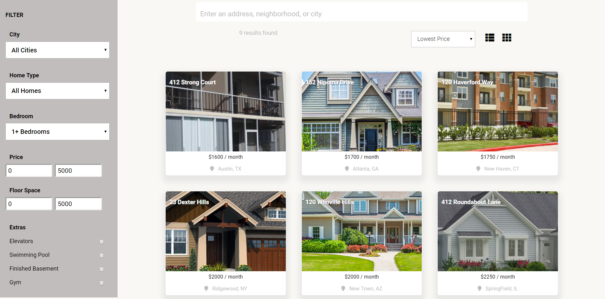
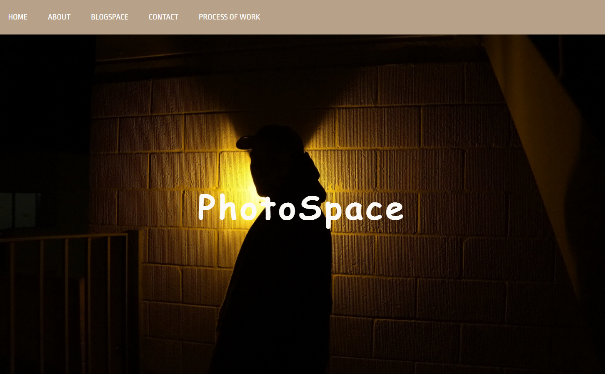
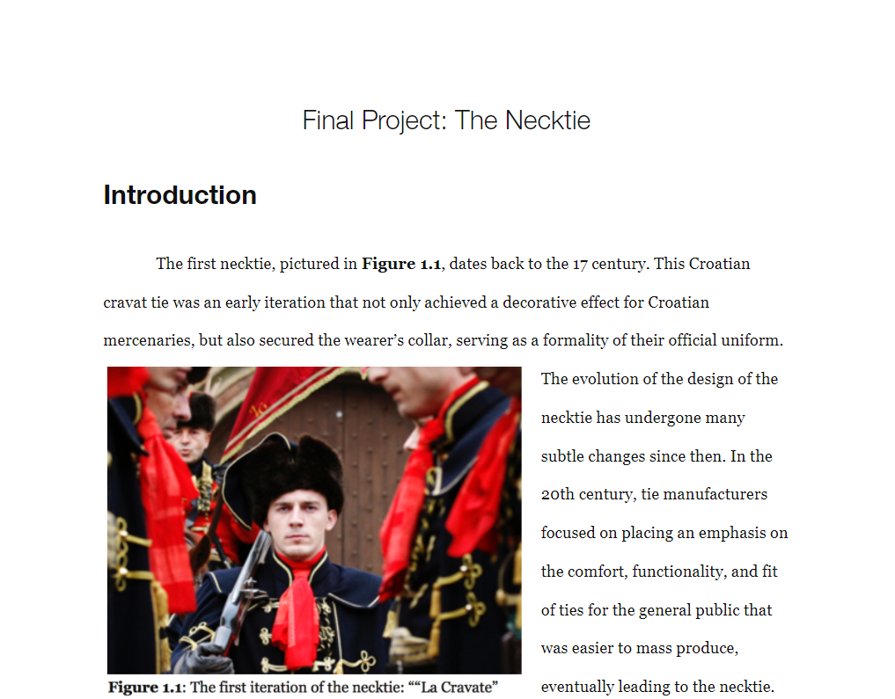

Kirubel Girma
Kirubel Girma
I pursue a multi-faceted discipline aiming to grow my skillset in the stack development and User Experience. I am a sophomore (second year) studying at the University of California San Diego, where I study Cognitive Science with a specialization in Machine Learning and Neural Computation, and design as it applies to UI/UX and Human-Computer Interaction.
I am currently spending time to becoming proficent in the MERN stack while getting design exposure through the UX process through a self-taught and learn-by-doing approach. I am most passionate about front-end web development and utilizing the design process to develop instinctive web applications for the audience. I aim to become a fullstack JavaScript developer by working with the CLI and using frameworks like React to build progressive web apps.
I typically spend my leisure time by engaging in developer groups, understanding relavent industry technologies, reading ebooks,and staying physically active. I am looking to grow my skillset by introducing myself to unique challenges and becoming involved within a complementary team.
Education
University of California San Diego
2016-2020
TYPE: Bachelors of Science (B.S.)
MAJOR: Cognitive Science
SPECIALIZATION: Machine Learning and Neural Computation
MINOR: Design (UI/UX)
Currently working on...
Book Seller Ecommerce Platform
with the MERN stack
- Integration with Github, Stripe, MailChimp
- Model and Component creation
- Oauth user authentication
- Database Use
The builderbook is a web application built on the React-focused MERN stack with the use of a database, connections to various APIs for features like email listings and transaction selling through Stripe. Currently in the process of creating a database and server while creating the modular components for the structure of the project.
builerbook GithubPersonal Portfolio
LocalHomes.com | Real Estate in React
An application to search for local real estate listings. The JavaScript library, Reactjs, is utilized to process data dynamically and render components within the DOM.
GithubPhotoSpace
PhotoSpace features as a portfolio for a photographer at work. The website includes static HTML and CSS along with use of JS. The app is simple, fast, and intuitive for the user and the control of the photographer.
Github Write UpDSGN 1 - The Design of Ties
This written paper discusses the necktie and critiques the object's functionality with respect to the wearer's needs. The design process is documented from the stage of problem discovery and refinement by understanding constraints and limitations, to ideation and the redesign of prototypes.
Write Up
See what I've been up to!